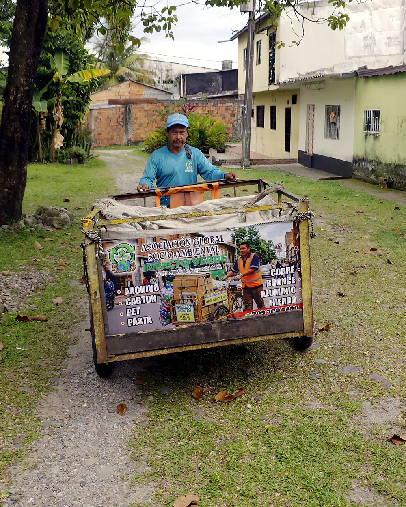
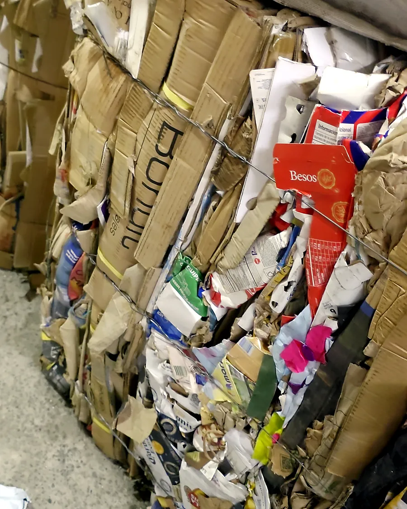

Sensibilización a usuarios
Brindamos capacitaciones y jornadas de sensibilización ambiental para promover la correcta separación en la fuente, fortalecer la cultura del reciclaje y el aprovechamiento responsable de los materiales.
Inicio / Servicios
Recolección, transporte, pesaje, clasificación, compactación, almacenamiento y comercialización de material aprovechable.
Del momento en que separas hasta que el material vuelve a la industria: así lo cuidamos en cada paso, para que se aproveche y aporte a la economía circular.
Recogemos el material separado en hogares, comercios y oficinas.
Lo llevamos hasta nuestra bodega del barrio Industrial.
Pesamos cada entrega en báscula y la dejamos registrada.
Separamos por tipo: cartón, papel, plásticos y metales.
Prensamos el material en pacas para aprovechar el espacio.
Lo guardamos ordenado y protegido hasta su venta.
Lo entregamos a la industria, que lo vuelve a producir.



Brindamos capacitaciones y jornadas de sensibilización ambiental para promover la correcta separación en la fuente, fortalecer la cultura del reciclaje y el aprovechamiento responsable de los materiales.

Emitimos certificaciones que respaldan las cantidades de material recuperadas y gestionadas, como soporte de su adecuada disposición y de tu aporte a la sostenibilidad.
Si algo no salió bien o quieres proponernos algo, cuéntanoslo.